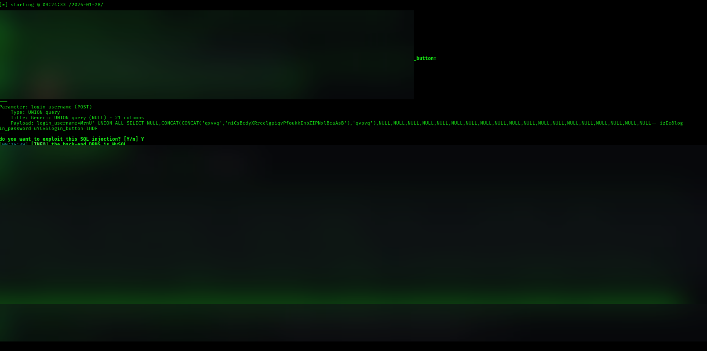
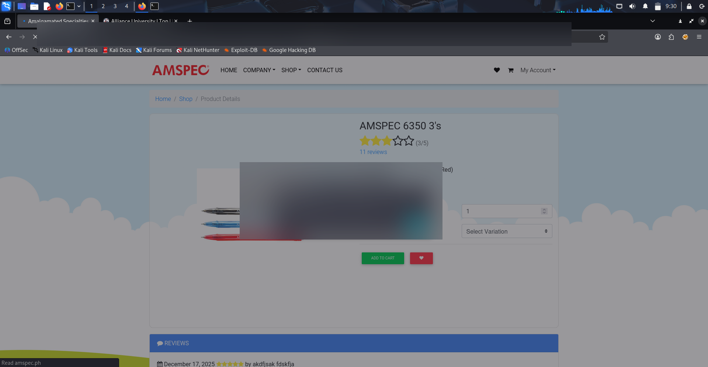
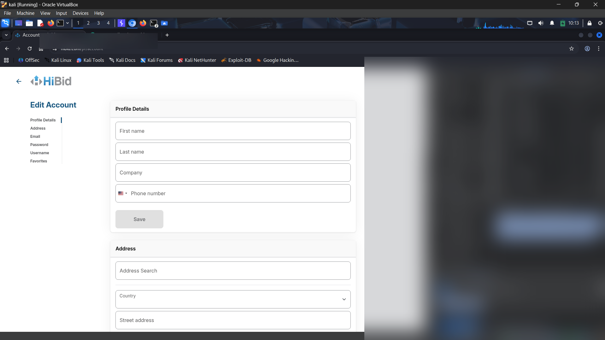
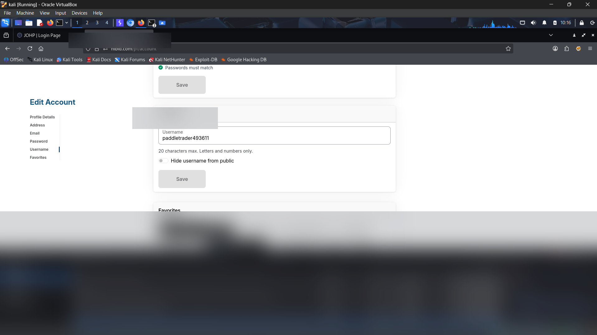

case study 04 / 05
Vulnerability Assessment and Penetration Testing
Structured web application testing covering reconnaissance, endpoint enumeration, SQL injection credential extraction, Reflected XSS, and session hijacking.
01Project overview
This project represents hands-on web application vulnerability assessment and penetration testing conducted across test applications and authorized lab scopes. The testing systematically evaluated authentication mechanisms, input handling, and session state management.
Key vulnerabilities identified and verified include high-impact SQL injection in login parameters leading to administrative credential extraction, Reflected Cross-Site Scripting (XSS) exposing session cookies, and insecure session token handling permitting unauthorized session hijacking and account takeover without credentials.
02Problem statement
Web applications represent one of the primary vectors for initial compromise. Flaws in SQL query parameterization, insufficient sanitization of client inputs, and lax cookie attributes create direct avenues for complete database compromise and session impersonation. Defensive analysts must understand these attack paths in detail to implement effective WAF rules, audit application telemetry, and validate developer remediation.
03Objective
Assess web application attack surfaces through structured reconnaissance, endpoint enumeration, vulnerability discovery, manual verification, and remediation reporting:
- Enumerate and test authentication forms for injection flaws and database compromise.
- Evaluate client-side input parameters for reflected script execution vulnerabilities.
- Inspect session management cookies and assess resistance against unauthorized token reuse and session hijacking.
- Document findings with technical severity ratings and actionable developer remediation guidance.
04Technologies and tools
| Tool / Area | Application in Assessment |
|---|---|
| sqlmap | Automated database enumeration and UNION query SQL injection exploitation |
| Kali Linux | Security testing platform hosting web exploitation and auditing tools |
| Browser DevTools | Storage inspection, cookie analysis, network request tracing, and DOM evaluation |
| Manual Testing | Hand-crafted HTTP requests, parameter tampering, and XSS payload injection |
| MySQL / MariaDB | Target backend database engine evaluated during SQL injection exploitation |
| OWASP Top 10 | Benchmarking framework applied to evaluate findings and prioritize severity |
05System architecture
As a security assessment project, the diagram below illustrates the methodical vulnerability assessment and penetration testing lifecycle.
06Implementation methodology
- Scope Confirmation: Define target hosts, authorized boundaries, and testing rules of engagement.
- Reconnaissance & Endpoint Mapping: Enumerate application endpoints, authentication forms, product query parameters, and cookie storage mechanisms.
- SQL Injection Assessment: Analyze login form inputs (`check_login.php`) for parameter concatenation, verifying UNION-based SQL injection with `sqlmap`.
- Cross-Site Scripting (XSS) Assessment: Inject script payloads into reflected query parameters (`id`) to verify context-aware output escaping and script execution.
- Session Management Evaluation: Inspect token complexity, cookie security flags (`HttpOnly`, `Secure`, `SameSite`), and test for session fixation and token reusability.
- Risk Assessment & Remediation: Document step-by-step reproduction steps and outline precise defensive remediation steps.
07Detection / testing workflow
Key Vulnerabilities Assessed
- SQL Injection (UNION-based): Discovered in the POST parameter
login_usernameof the login endpoint. Allows arbitrary query concatenation against MySQL back-end databases.
Remediation: Adopt parameterized queries (prepared statements with PDO or mysqli) and enforce strict input validation. - Reflected Cross-Site Scripting (XSS): Unsanitized user input reflected in URL parameters allowed execution of arbitrary JavaScript within the victim's browser context.
Remediation: Implement context-aware output encoding (HTML entity encoding) and configure Content Security Policy (CSP) headers. - Insecure Session Token Management & Session Hijacking: High-privilege session cookies lacked proper hardening and could be transplanted into alternative browsers to bypass authentication entirely.
Remediation: EnforceHttpOnlyandSecureflags, implement server-side IP/user-agent fingerprint binding, and ensure robust session termination on logout.
08Results and validation
Testing produced proof-of-concept evidence for the assessed weaknesses. The published screenshots have been blurred to conceal target identifiers, account data and session material:
- SQL Injection Validation: A UNION-based SQL injection test against a login form parameter exposed database structure and records in the controlled assessment evidence. Database names, account details and extracted values are intentionally obscured in the public screenshot.
Remediation: Use parameterized queries, least-privilege database accounts and safe error handling. - Reflected XSS Validation: A crafted input was reflected and executed in the browser context. The demonstration showed why sensitive browser-accessible session data must be protected; the cookie value and target identifier are blurred in the published evidence.
- Session Replay / Hijacking Validation: The assessment demonstrated that replaying an exposed session value could restore an authenticated session in the tested environment. Account identifiers and session values are intentionally omitted from this public case study.
09Challenges and learning
- From Vulnerability to Defensive Triage: Understanding how SQL injection appears in application logs (such as UNION statements and abnormal quotes) directly informs how SOC analysts build detection rules in SIEM and WAF engines.
- Cookie Security Attributes are Critical: Simple omissions such as missing
HttpOnlyflags elevate Reflected XSS from a cosmetic issue to full account takeover via cookie theft. - Actionable Remediation: A penetration test is only as valuable as the clarity and practicality of its remediation recommendations for developers.
10Screenshots and evidence
The screenshots below preserve the original assessment evidence. Sensitive target identifiers, database records, account names and session values have been blurred in the published copies.

Terminal output from sqlmap testing a POST login form parameter with a UNION-based SQL injection technique. The screenshot retains the testing workflow while database identifiers and extracted records are blurred for privacy.

Demonstration of reflected input executing in a browser alert. The target hostname and session value are blurred in the published screenshot.

Browser Developer Tools used to inspect session storage and cookie attributes during the assessment. The target hostname and token-bearing developer-tools panel are blurred to prevent disclosure of live or reusable session material.

The screenshot documents the session replay demonstration in the tested environment. The account identifier and browser storage containing session values are blurred in the public copy.
Testing was performed within controlled lab environments and designated authorization bounds. Target identifiers, account information, database records and session material are blurred in the public screenshots. Testing should only be represented as authorized where written permission or an explicitly approved lab scope exists.
11Repository
All technical findings were documented in a comprehensive vulnerability assessment report with severity classifications and remediation guidance.